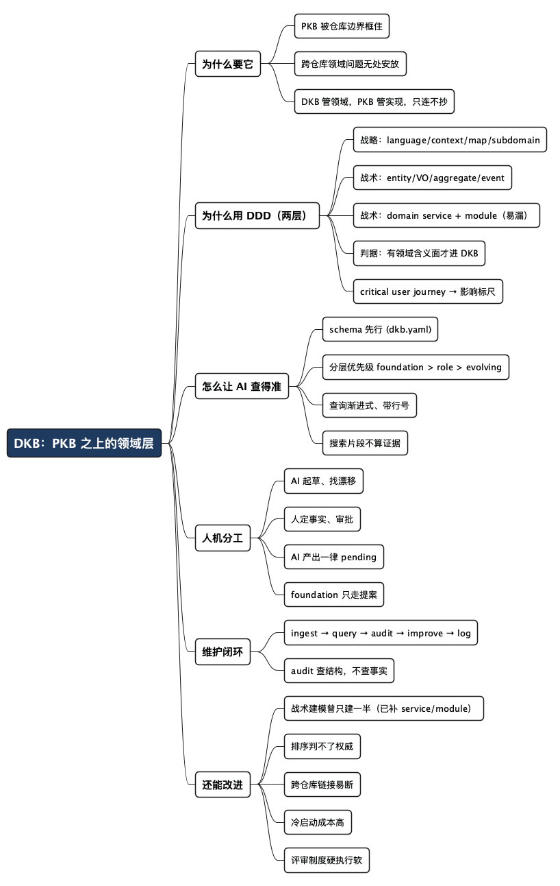

比 PKB 高一层：用 DDD 搭一个跨仓库的领域知识库（DKB）
Posted on 三 21 10月 2026 in Tech
| Abstract | 比 PKB 高一层：用 DDD 搭一个跨仓库的领域知识库（DKB） |
|---|---|
| Authors | Walter Fan |
| Category | Tech |
| Version | v1.0 |
| Updated | 2026-10-21 |
| License | CC-BY-NC-ND 4.0 |
大纲
展开看看
- 痛点：PKB 管一个仓库的实现细节，答不了横跨多个仓库的领域问题
- DKB 是什么：PKB 之上的领域层，用 DDD 的语言组织 why/what/how，实现细节甩给 PKB
- 为什么选 DDD：Evans 那套概念天生就是跨边界的组织法，不是花架子
- 怎么给 AI 查：schema 先行、分层优先级、带行号引用、不许拿搜索片段当证据
- 人机怎么分工：AI 起草和找漂移，人定事实和审批，AI 产出一律 pending
- 一次维护长啥样：ingest → query → audit → improve → log 的闭环
- 还能改进什么：排序不等于权威、跨仓库链接易断、冷启动贵、评审靠自觉
你在 Codex 里问一句：“语音这条链路里，呼叫转移为什么要把会话所有权也转走？这会动到哪些服务？”
它开始 grep 当前仓库。可当前仓库只是转移链路上的一环，这个问题横跨 signaling、media、billing 三个仓库，答案藏在三个团队各自的文档和代码里——没有哪一个 PKB（Project Knowledge Base，单仓库知识库）装得下它。
我上一篇讲的是怎么用 MCP 给 agent 开个柜台，安全地读写一个知识库。但那层知识库天然是单仓库的：它答得了“这个服务里重试上限为什么是 3 次”，答不了“这条用户旅程为什么这么设计、它跨了哪些 bounded context”。后者是领域问题，得在 PKB 之上再架一层。
我的主张是一句话：在 PKB 之上搭一个 DKB（Domain Knowledge Base），用 DDD 的语言组织跨仓库的 why/what/how，实现细节仍旧甩给各仓库的 PKB。 这篇讲三件事——DKB 怎么分层才让 AI 查得准，人和 AI 怎么分工，以及这套 skill 眼下还缺什么。
- DKB 管领域：目的、概念、边界、旅程、上下文怎么协作
- PKB 管实现：某个仓库里的类、接口、配置、调用细节
- 两层之间是链接，不是复制——DKB 要讲 API 就链到 PKB，绝不把代码抄进来
一、PKB 答不了的那类问题
先把两类问题摆清楚，因为分不清就会把知识塞错地方。
| 问题 | 归谁 | 举例 |
|---|---|---|
| 这个仓库里某段逻辑怎么实现的 | PKB | billing 服务里计费窗口是怎么算的 |
| 一个领域概念跨仓库怎么协作 | DKB | 呼叫转移为什么要转移会话所有权，动到哪些上下文 |
| 这个函数的签名和参数 | PKB | transferCall() 收哪些参数 |
| 这条用户旅程为什么这么设计 | DKB | 转移失败时的回退路径为什么是这样 |
PKB 天然被仓库边界框住。一个跨仓库的领域问题丢给它，它要么只看到自己那一段瞎编，要么一头扎进三个仓库 grep——这正是上一篇讲的“全量和零权限一样糟”在跨仓库场景的放大版。
所以得有一层专门讲领域的知识，它不关心某个类怎么写，只关心：这个领域为什么存在、它由哪些概念和边界构成、这些边界怎么协作。这一层就是 DKB。
二、为什么偏偏用 DDD，而不是随便分几个文件夹
你可能会想，不就是跨仓库文档吗，建几个目录不就完了。问题是目录名是随意的，而随意的结构 AI 查不准、人也对不齐。DDD（Domain-Driven Design，领域驱动设计）提供的恰恰是一套不随意的、天生跨边界的组织语言。
Eric Evans 在 2003 年那本 Domain-Driven Design 里给的概念分两层，这两层对知识库恰好是两种不同性质的内容，不能混。战略设计（strategic）管"怎么切"，战术设计（tactical）管"块里怎么建模"。
战略层——跨上下文的骨架，天生就是跨仓库的，拿来做 DKB 的角色页几乎是现成的：
| 战略概念 | 在 DKB 里的落点 | 回答的问题 |
|---|---|---|
| Ubiquitous Language（统一语言） | 术语表 06-glossary |
同一个词在不同团队是不是指同一件事 |
| Bounded Context（限界上下文） | 架构图 01-architecture |
领域被切成哪几块，各自的边界在哪 |
| Context Map（上下文映射） | 架构图里的关系边 | 两个上下文之间是 ACL、OHS 还是 shared kernel |
| Subdomain（子域） | 02-subdomains |
哪些是核心域，哪些是支撑域、通用域 |
| Critical User Journey（关键用户旅程） | 07-user-journeys |
一个用户目标端到端穿过哪些上下文 |
这里 bounded context 指“领域里一块有明确边界、内部术语自洽的区域”，ACL（Anti-Corruption Layer）指“两块区域之间防止互相污染概念的那层翻译”。这些不是花架子——它们本来就是用来描述“多个团队、多个边界怎么拼成一个领域”的，而这正是跨仓库知识库要干的活。
战术层——一个上下文内部的模型，这才是容易被漏掉的地方。它描述一块边界内部由什么构成，全放在领域模型页 04-domain-model：
| 战术概念 | 记什么（领域含义面） | 不记什么（甩给 PKB） |
|---|---|---|
| Entity（实体） | 身份、不变式、生命周期 | 字段、类名、ORM 映射 |
| Value Object（值对象） | 含义、校验规则 | 具体类型、序列化 |
| Aggregate（聚合） | 一致性边界、谁是 root | 事务实现 |
| Domain Service（领域服务） | 操作的领域语义、承载哪条规则、跨哪些实体 | XxxService 类怎么写 |
| Module（模块） | 上下文内按内聚度的切分 | 包结构、目录 |
| Domain Event（领域事件） | 何时发生、含义、影响哪些上下文 | 消息格式、topic |
这张表里藏着一条判据，也是整个 DKB 分层的命门：一个战术构件进不进 DKB，看它有没有"领域含义面"。 实体、值对象、聚合、领域服务、模块、领域事件都有——所以它们进，但只记含义那一面。Repository 和 Factory 这俩没有领域含义面（纯粹是持久化和构造的实现模式），就老老实实留在 PKB，别往 DKB 里塞。
DKB 记领域的"名词和动词"，不记它们的"实现"。 名词是实体、值对象；动词是领域服务——别只建名词世界，核心逻辑常常在动词里。
其中两个最容易被漏。一个是 domain service（领域服务）：像"呼叫转移"这种操作横跨 caller、callee、session，不属于任何单个实体，它的领域语义（转移时所有权怎么变、失败怎么回退）是纯领域知识，必须在 DKB 里。另一个是 module（模块）：它和 bounded context 不是一回事——context 是边界，module 是边界内把模型切成可理解块的组织手段，缺了它，一个大上下文内部就是一张平铺的对象表，读者抓不住结构。
还有我最看重的 critical user journey（CUJ，关键用户旅程）。一条 CUJ 顺着一个用户目标从头走到尾：谁发起、要达成什么、怎么触发、走哪几步、成功长什么样、失败怎么回退。它的价值在于给“影响”一个可判断的标尺——一个改动或一次故障重不重要，看它打断了哪几条关键旅程。哪些旅程算关键、目标定在哪，这是人定的，AI 不替你拍板。
DKB 的角色页就照着战略概念编号排开，像组件手册一样带序号：00-domain-vision、01-architecture、02-subdomains、03-components、04-domain-model、05-call-paths、06-glossary、07-user-journeys，再加一个 ai-guide；战术模型全收在 04-domain-model 一页里。序号固定，缺页就留空号，不重排——这样 AI 和人引用某一页时，路径是稳定的。
三、怎么让 AI 查得准：schema 先行，带行号引用
知识库建得再好，AI 查不准也是白搭。DKB 这套查询设计里，有几条约束值得单拎出来讲，因为它们直接决定了 agent 会不会瞎编。
第一，schema 先行。 整个 DKB 由一份 dkb.yaml 定义：每个角色（vision、context-map、subdomains……）映射到实际的 Markdown 路径，再加一份 frontmatter 契约（title、review_status、summary、tags 等）。AI 不用猜哪页讲什么，读 manifest 就知道。这条直接借鉴了 Karpathy 那篇 LLM Wiki 的 gist——先定 schema，再让 LLM 往里填，而不是让它对着一堆散文自由发挥。
第二，分层优先级。 知识分三层，冲突时有明确的先后：
foundation（人类拥有的权威层）
↓ 优先级高于
role pages（共享的工作地图）
↓ 优先级高于
evolving（有证据支撑的草稿）
knowledge/foundation/ 是人类所有的权威层——产品意图、业务含义、拍过板的决策都在这里，AI 默认不许原地改。role pages 是共享的工作地图，evolving/ 放带证据的草稿。三者冲突时，以 foundation 为当前权威，把矛盾证据连同它的日期或 commit 一起摆给人，让人去裁，AI 不许偷偷改写任何一边。
第三，查询是渐进式的，而且必须带行号。 别把整棵树塞给 LLM。流程固定是：先 --list 看目录 → 再按问题 search → 最后只开命中的那段行号。
# 先搜，拿到候选页和它们的行号
python3 scripts/dkb_query.py --dkb-root . "call transfer ownership"
# 再按返回的行号，只开那一段
python3 scripts/dkb_query.py --dkb-root . --page portal/glossary --start-line 25 --end-line 40
返回结果不只给内容，还带上知识层、审批状态、更新日期、机密级别——这些元数据帮 AI 判断这条到底权不权威。
第四，也是最关键的一条——搜索片段不算证据。 排序只负责找候选，不负责决定哪句话是权威的。agent 拿到搜索命中后，必须按返回的路径和行号真的去把那段源文件打开核对，才能引用。audit 报告和搜索排名都只是线索，不是事实。查出来的新论断要么有核对过的出处，要么标成待确认的 open question——不许靠猜填坑。
这四条合起来就一个意思：让 AI 的每个领域结论都能顺着路径和行号追回源头。 查得准的前提不是模型多聪明，是结构逼着它交出证据。
四、人机怎么分工：AI 起草，人定事实
知识库最怕两种极端：全靠人写，没人维护得动；全靠 AI 写，没人敢信。DKB 的分工是一条清楚的线——AI 干"找和起草"，人干"定事实和审批"。
| 这件事 | AI 的贡献 | 人的决定 |
|---|---|---|
| 领域目标/架构决策变了 | 定位受影响的 why/what/how 页，起草带出处的改动 | 确认意图、取舍、生效日期 |
| 代码或配置变了 | 判断领域规则/边界/流程是否真的变了，只改受影响的页 | 确认产品含义或所有权有没有变 |
| 来了新设计/故障/外部资料 | 起草一条聚焦的 evolving 笔记，带出处、日期、open question | 决定这条要不要升级成 foundation |
| audit 报出缺口或冲突 | 复现这个发现，提出最小的、有证据支撑的修法 | 裁定互相矛盾的领域主张 |
这条线背后有两个硬规矩，是整套机制的地基：
- 只有人能把一页标成
approved或reviewed。 AI 写或改过的页，一律留在review_status: pending。这是一条 hard gate，不是建议——写进了 verification gate，AI 永远不能自己给自己盖"已审核"的章。 - foundation 不许 AI 原地改。 真要改，AI 只能在
_generated/proposals/下准备一份带目标路径和证据的提案，等人明确点头才落地。从 evolving 升级到 foundation 更是纯人类决定——audit 跑得再干净，也不能让一条草稿自动变成权威。
我特别认同最后这半句。见过太多"文档即代码"的实践走到最后变成"AI 自动生成、没人看、越攒越不敢信"。DKB 这套的态度很清醒：AI 可以把活干到 90%，但那最后决定"这是不是事实"的 10%，必须是人，而且得留下谁审的痕迹。 知识库的价值不在于长得快，在于可信——可信靠的不是生成速度，是审批留痕。
五、一次维护闭环长什么样
把上面几条串起来，一次完整的维护大致是这么个环，照搬自 Karpathy 那个 wiki loop：
schema(dkb.yaml) → ingest → query → lint/audit → improve → log
拿“计费窗口的算法改了”举个例子：
- ingest：AI 拿到改动，判断它动没动到领域规则。改的只是实现，就只在对应页留一条 evolving 笔记，带 commit 和 open question；动了领域含义，才往上游 why/what/how 页走。
- query：改之前先搜一遍，确认哪些页真覆盖了这个概念，别误伤无关页。
- audit：跑
python3 scripts/dkb_audit.py --dkb-root .，零 LLM 的纯静态检查——manifest 能不能解析、frontmatter 全不全、角色页的链接断没断。有 critical 发现就退出码 1。 - improve：把机械修正（改链接、对齐术语）和需要领域判断的主张分开。前者 AI 直接改，后者起草 + 标 pending，交给人。
- log：往
log.md追一条——改了哪些页、证据是什么、验证做了没、还有哪些待人决定。
这里要分清两件常被混为一谈的事：audit 通过 ≠ 领域主张为真。 audit 查的是结构合不合规（链接通不通、frontmatter 全不全），它根本不懂你这条业务规则对不对。build 成功、audit 干净，都只说明格式没问题，不代表内容可信——内容可信得靠人核对那一关。
六、这套 skill 眼下还缺什么
说完优点得说边界，不然就成软文了。按我看，这套 DKB skill 还有这么几处可以改进，第一条我顺手已经补了，其余几条是更长期的坎。
- 战术建模一度只建到一半。 这是第一版模板最实在的缺口：
04-domain-model有聚合、实体、值对象、领域事件，却漏了 domain service 和 module——而这俩恰恰有领域含义面，不该漏。只建"名词世界"不建"动词世界"，领域的核心逻辑（那些不归属任何实体的操作）就无处安放。现在模板补上了这两张表，checklist 的映射和 audit 信号也跟着加了，守的还是那条老规矩：只记领域含义，类名签名一律甩给 PKB。 - 排序找得到候选，但判不了权威。 这是设计上诚实承认的局限——dkb_query 用的是基础排序，命中率靠关键词。领域知识里大量是同义词、历史叫法、跨团队别名，光靠排序容易漏。真要查得准，下一步得往语义检索、或者挂上代码知识图谱的方向走，让"相关"不只等于"字面匹配"。
- 跨仓库链接天生易断。 DKB 靠链接甩给各仓库 PKB，可 PKB 自己在演进——文件改名、目录重构，DKB 这头的链接就成了死链。audit 能查同一棵树内的相对链接，但跨仓库那段的有效性，目前更多还得靠人盯。这是所有跨仓库知识库的通病，不是这套 skill 独有，但确实没根治。
- 冷启动成本高。 第一次 adopt 一个 portal，vision、subdomains、model、journeys 这几页通常都是空的——因为它们装的是只有人脑子里才有的产品意图，AI 代替不了。换句话说，DKB 一开始能帮你搭骨架、填 what 和 how，但 why 和那几条关键旅程，得领域专家坐下来写。这个冷启动的坎，决定了它更适合有人愿意持续喂养的领域，而不是建完就扔。
- 评审这道闸，制度上硬、执行上软。 "AI 产出一律 pending、人审才算数"写进了 hard gate，这很好。但"人会不会真去审"是组织问题，不是工具问题——如果团队没人认领 foundation 的审批，pending 的页会越堆越多，最后大家干脆绕过它直接信。工具把闸门造好了，但按不按闸，得靠团队自己立规矩。
第一条能顺手补上，恰恰说明这套东西的结构是开放的——缺哪个战术构件，补一张表、加一行 checklist 映射就进去了，不用动编号契约。一套知识库 skill 肯在 SKILL.md 里明说"排序不决定权威""audit 不代表为真"，又肯把战略/战术的切分判据写进文档，比那些号称全自动、一键生成的工具靠谱得多。它清楚自己的边界在哪，剩下的就是你愿不愿意把那最后 10% 的人类判断补上。
总结：知识库的价值不在长得快，在可信且可追
PKB 管单仓库的实现，DKB 管跨仓库的领域——两层各司其职，之间只连不抄。DDD 不是花架子，它那套 bounded context、subdomain、critical user journey 的语言，天生就是用来组织"多边界怎么拼成一个领域"的。
而真正让这套东西站得住的，是那条人机分工线：AI 把活干到 90%，人守住"这是不是事实"的最后 10%，并且留下谁审的痕迹。 查得准靠结构逼它交证据，可信靠审批留痕——这两样，模型再强也替代不了。
如果你也在被跨仓库的领域问题反复折磨，可以从最小的一步开始：
- 先分层：把"某仓库怎么实现"和"领域怎么协作"两类知识分开，别塞一个地方。
- schema 先行：定一份 manifest，角色页编号固定，frontmatter 带审批状态。
- 立人机规矩：AI 产出一律 pending，foundation 只走提案，谁审谁签名。
- 查询带行号：先 list 再 search 再开行号，搜索片段不许当证据。
知识库长得快不难，难的是三个月后还有人敢信。 可信不靠生成速度，靠的是每条结论都能追回源头、每次审批都留下痕迹。
全文思维导图
@startmindmap
<style>
mindmapDiagram {
node {
BackgroundColor #F8F9FA
RoundCorner 10
Padding 10
FontSize 13
}
:depth(0) {
BackgroundColor #1E3A5F
FontColor white
FontSize 18
FontStyle bold
}
:depth(1) {
FontSize 15
FontStyle bold
}
:depth(2) {
FontSize 13
}
}
</style>
* DKB：PKB 之上的领域层
** 为什么要它
*** PKB 被仓库边界框住
*** 跨仓库领域问题无处安放
*** DKB 管领域，PKB 管实现，只连不抄
** 为什么用 DDD（两层）
*** 战略：language/context/map/subdomain
*** 战术：entity/VO/aggregate/event
*** 战术：domain service + module（易漏）
*** 判据：有领域含义面才进 DKB
*** critical user journey → 影响标尺
** 怎么让 AI 查得准
*** schema 先行 (dkb.yaml)
*** 分层优先级 foundation > role > evolving
*** 查询渐进式、带行号
*** 搜索片段不算证据
** 人机分工
*** AI 起草、找漂移
*** 人定事实、审批
*** AI 产出一律 pending
*** foundation 只走提案
** 维护闭环
*** ingest → query → audit → improve → log
*** audit 查结构，不查事实
** 还能改进
*** 战术建模曾只建一半（已补 service/module）
*** 排序判不了权威
*** 跨仓库链接易断
*** 冷启动成本高
*** 评审制度硬执行软
@endmindmap

本作品采用知识共享署名-非商业性使用-禁止演绎 4.0 国际许可协议进行许可。 欢迎在我的个人网站 https://www.fanyamin.com 访问原文并评论。